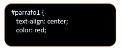
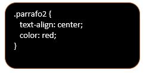

Propósito del sitio
Mediante este ejercicio practico no solamente conoceremos mas de HTML y CSS en la elaboracion de un
sirio web , sino ue ademas entraremos a practicar trabaando con codigo y veremos su disposicion
y sintaxis dentro del editor.
Un conjunto de reglas CSS estaria compuesto de un selector y un bloque de declaraciones.
Un conjunto de reglas CSS estaria compuesto de un selector y un bloque de declaraciones.
Lo primero que debemos declarar es el selector al que queremos darle el estilo.
El bloque de declaraciones puede contener una o más declaraciones que deben separarsepor un punto y coma.
Cada declaración incluye un nombre de propiedad y su respectivo valor separados por dos puntos.
Una declaración CSS siempre termina con punto y coma y el bloque de declaraciones es incluido entre llaves
(llave de apertura y llave de cierre).
En el ejemplo a continuacion todos los elementos HTML
serán centrados con el texto en color rojo:
ExaSoluciones. (2021). Sintaxis y Selectores CSS. Septiembre 24 2021, de Diseño, Desarrollo y
Alojamiento Web Sitio web: https://www.exasoluciones.com/inicio/tutoriales/css/sintaxis-y-selectores-css
Comentarios CSS
Son usados para explicar el código, y pueden ayudar cuando se edite el código en el futuro.
Los comentarios serán ignorados por el Navegador Web.
Cuando comentario CSS inicia con los caracteres /* y finalizan con */. Estos pueden abarcar varias líneas..
ExaSoluciones. (2021). Sintaxis y Selectores CSS. Septiembre 24 2021, de Diseño, Desarrollo y
Alojamiento Web Sitio web: https://www.exasoluciones.com/inicio/tutoriales/css/sintaxis-y-selectores-css
Selector CSS
El selector de elementos CSS selecciona elementos basados en el nombre del elemento.
Usted puede seleccionar todos los elementos
de una página como en el siguiente ejemplo,
y todos los elementos
serán centrados y con texto en color rojo: Selectores
El selector CSS para identificadores
El selector id usa el atributo id de un elemento HTML para seleccionar a un elemento en específico.
Dado que un id debe ser único dentro de una página, por lo que el selector de id se utiliza para
seleccionar a un único elemento. Para seleccionar un elemento con un id en específico, escriba un caracter # (codorniz)
seguido por el id del elemento.
La regla de estilo a continuación aplicará a un elemento HTML con un id igual a "parrafo1":

El selector CSS para clases
El selector CSS clases, escoge elementos HTML con una clase específica en este atributo.
Para seleccionar elementos con una clase específica, escriba un caracter de punto (.) seguido por el nombre de la clase.
En el siguiente ejemplo todos los elementos con la clase "parrafo2" aplicara el texto centrado y en color rojo.

Agrupación de Selectores
Podria Usted tener elementos con la misma definición de estilos como estos:

Pero podria agrupar los selectores para reducir al mínimo el código. Entonces
debe agruparlos en una sola línea separados por una coma cada uno.
En el siguiente ejemplo hemos agrupado los selectores del ejemplo anterior: